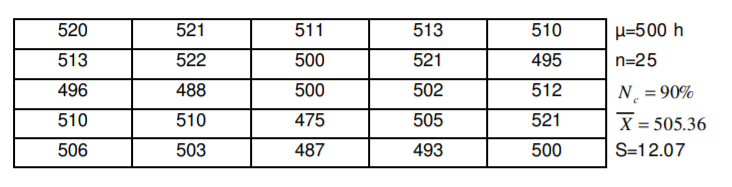
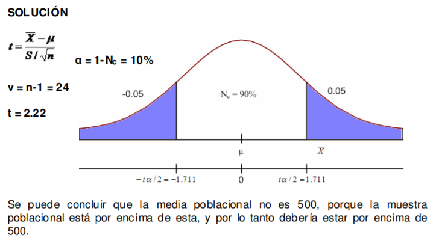
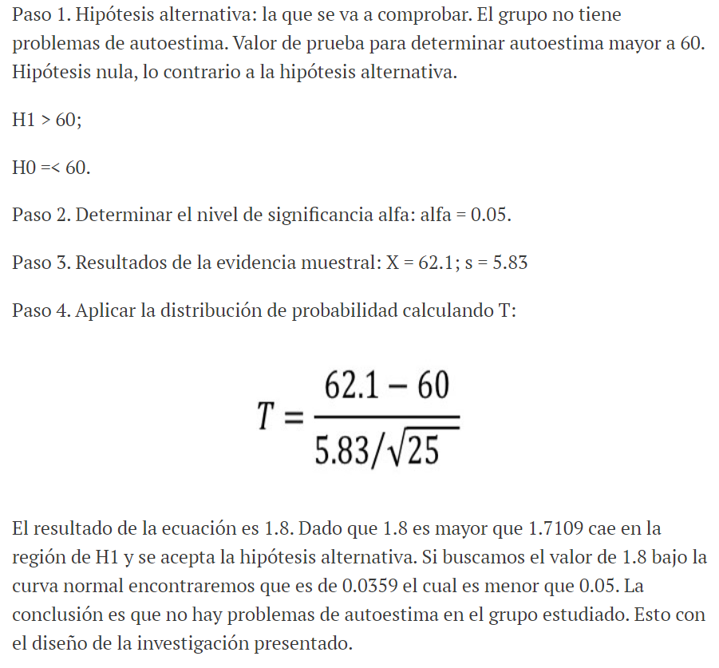

Exactamente ¿Que es la Distribucion T?
La distribución t de Student o distribución t es un modelo teórico utilizado para aproximar el momento de primer orden de una población normalmente distribuida cuando el tamaño de la muestra es pequeño y se desconoce la desviación típica.
En otras palabras, la distribución t es una distribución de probabilidad que estima el valor de la media de una muestra pequeña extraída de una población que sigue una distribución normal y de la cual no conocemos su desviación típica.
Preste atencion al siguiente ejemplo para poder resolver los problemas que a continuacion se le presentan
Problemas Propuestos a Resolver:
Un fabricante de focos afirma que us producto durará un promedio de 500 horas
de trabajo. Para conservar este promedio esta persona verifica 25 focos cada
mes. Si el valor y calculado cae entre –t 0.05 y t 0.05, él se encuentra satisfecho
con esta afirmación. ¿Qué conclusión deberá él sacar de una muestra de 25 focos
cuya duración fue?:


Se aplica una prueba de autoestima a 25 personas quienes obtienen una calificación promedio de 62.1 con una desviación estándar de 5.83. Se sabe que el valor correcto de la prueba debe ser mayor a 60. ¿Existe suficiente evidencia para comprobar que no hay problemas de autoestima en el grupo seleccionado?
